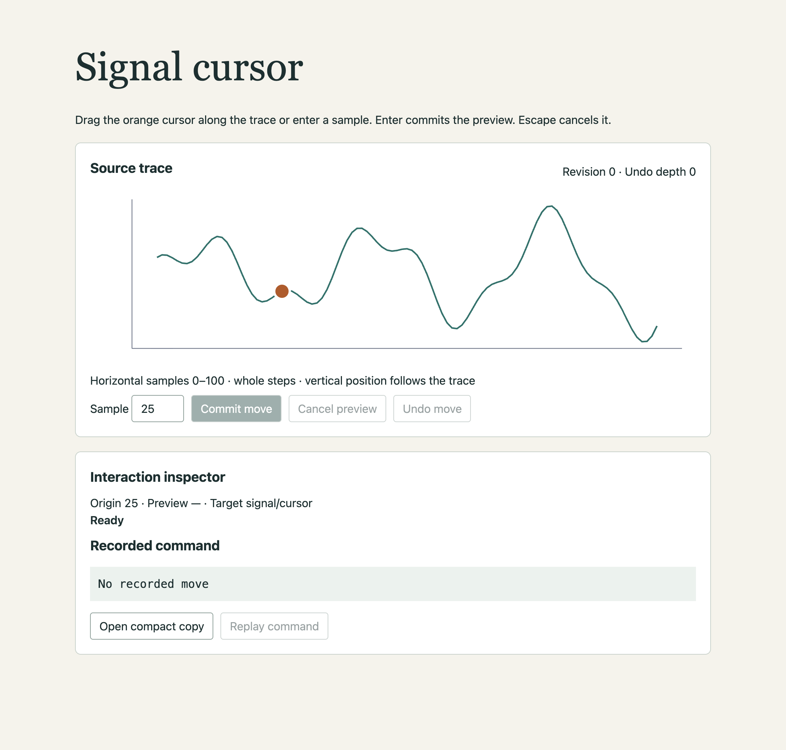
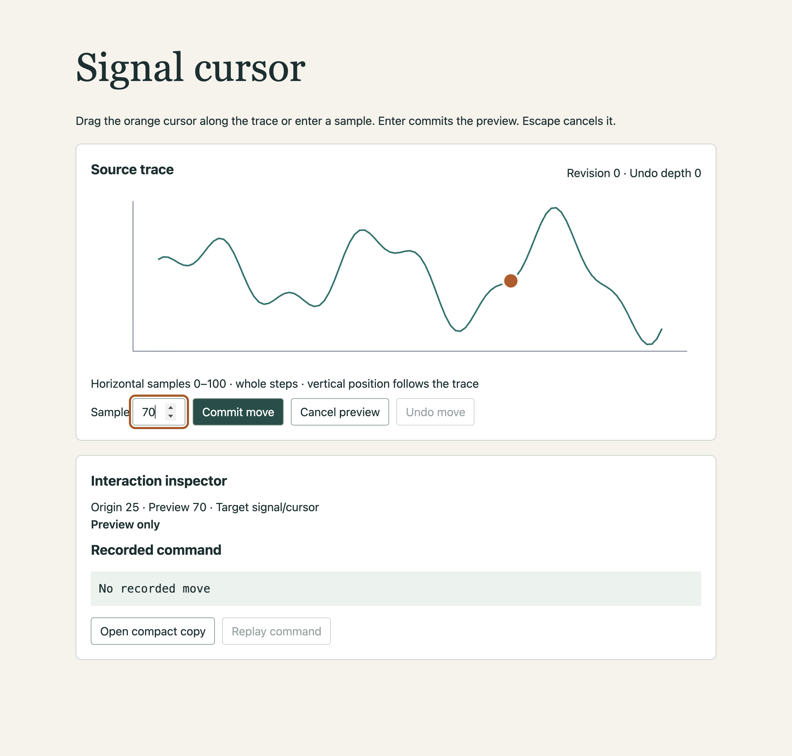
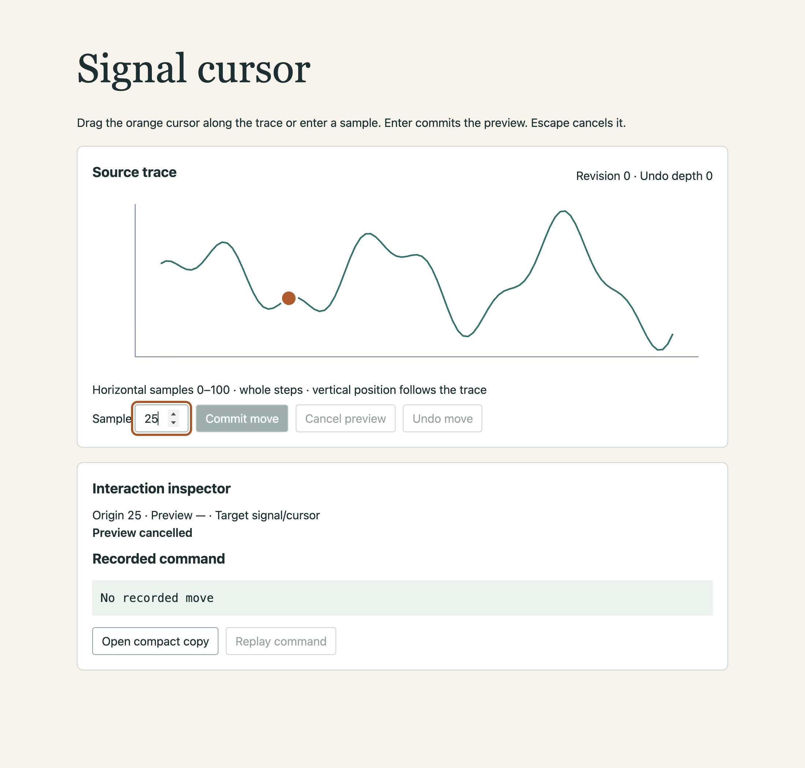
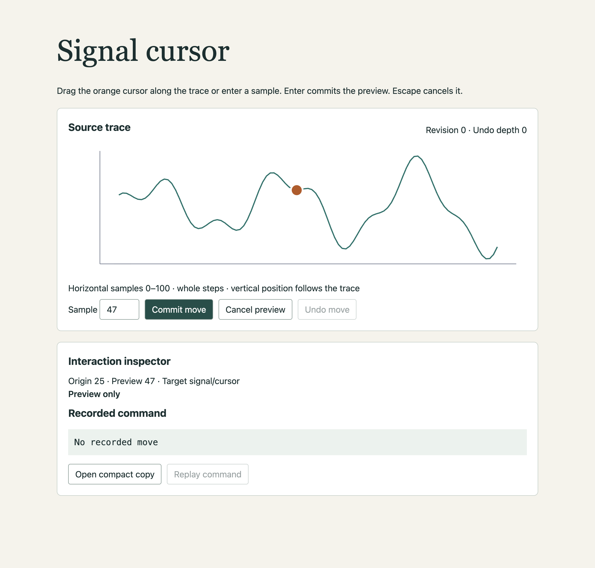
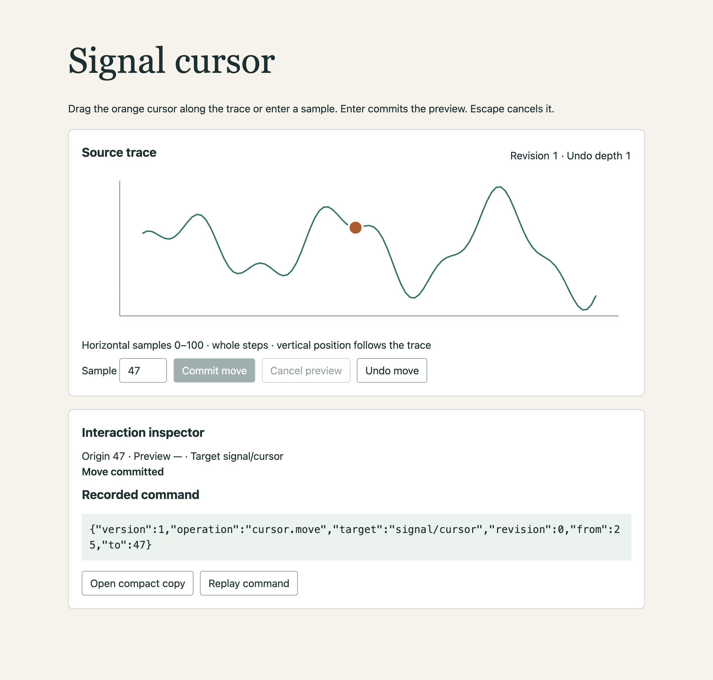
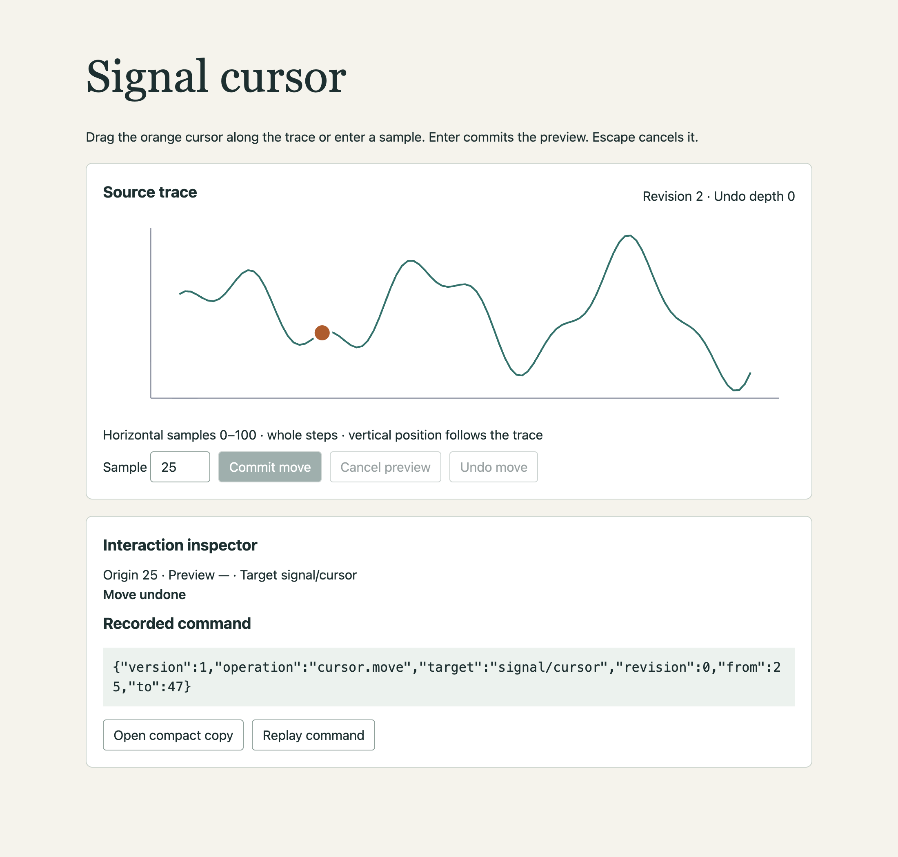
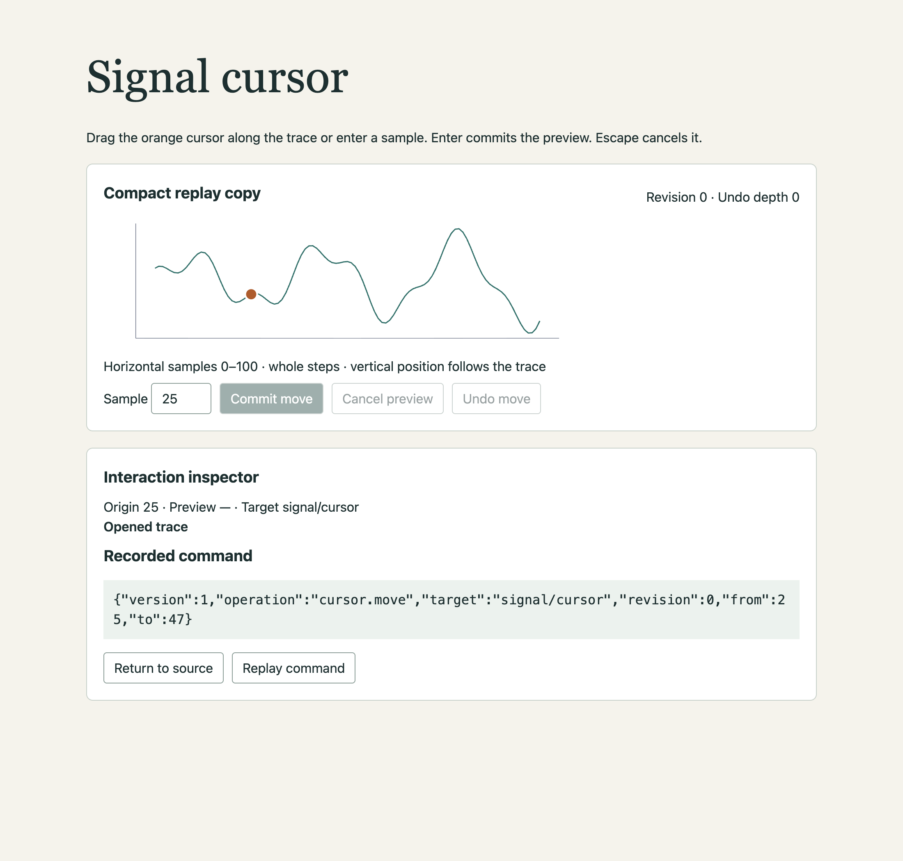
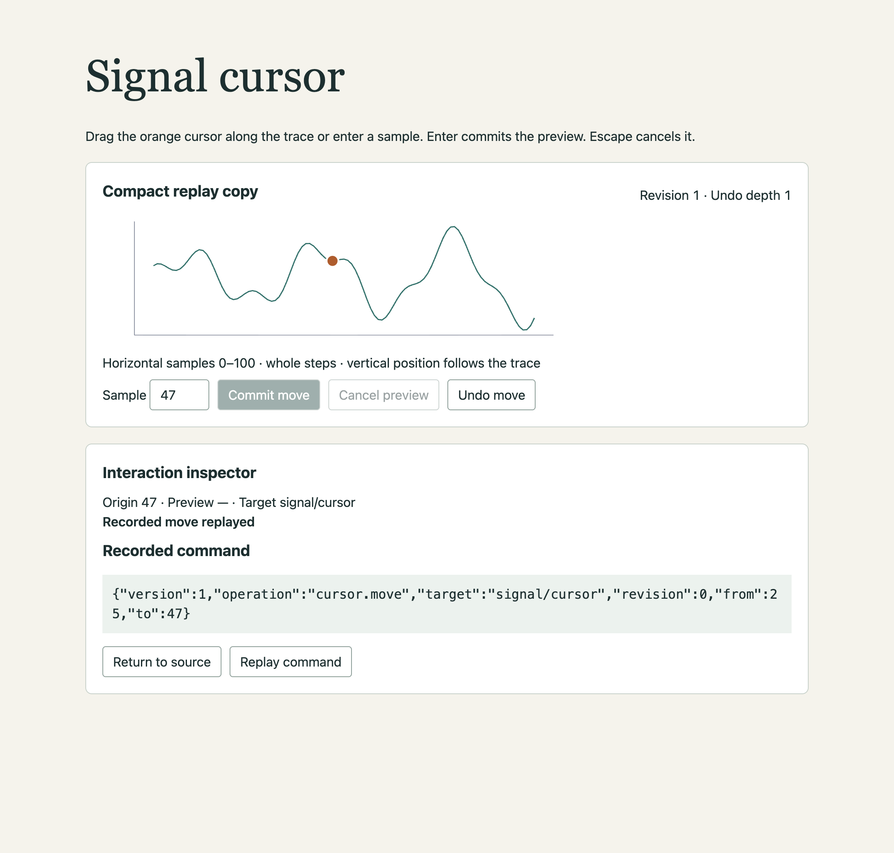
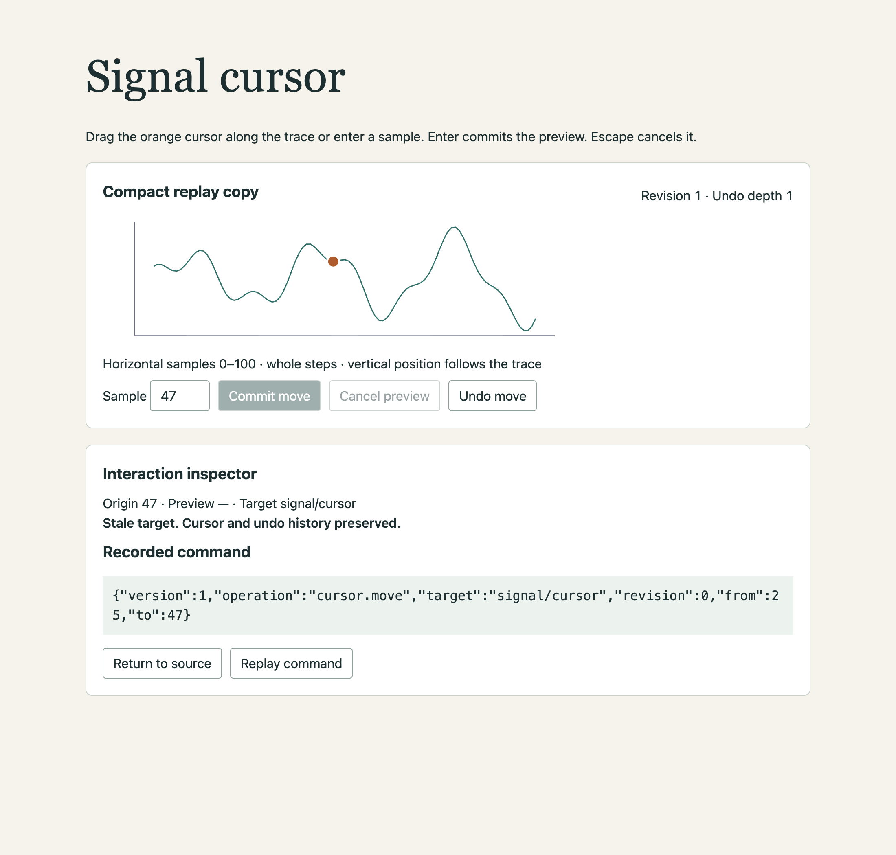
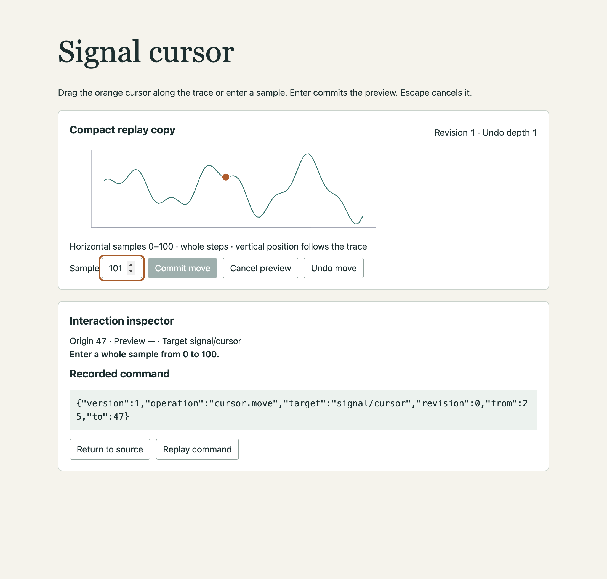

i19-inspectable-interactions · 854e38e43b3b97b28c369eadbdadd61394886381 · macOS · T3 collaborative preview incognito · Electron 44.10.1 / Chromium 152.0.7977.169 · Moxi Python reference SVG + DOM pointer/keyboard events · 101 synthetic signal samples, cursor starts at 25

Source trace Action: Open a fresh isolated origin. Expected: Sample 25, revision 0 and undo depth 0.
initial · browser · 2200 × 2100 pixels

Numeric preview Action: Focus Sample and replace 25 with 70. Expected: The orange cursor follows sample 70 while origin and revision stay at 25 and 0.
interaction · browser · 2200 × 2100 pixels

Escape restores the origin Action: Press Escape in Sample. Expected: The field and marker return to 25. Undo depth stays at 0.
recovery · browser · 2200 × 2100 pixels

Pointer preview Action: Drag the orange cursor to the horizontal center of the SVG and release. Expected: The inspector shows preview 47, origin 25. Commit move is available.
interaction · browser · 2200 × 2100 pixels

One committed move Action: Click Commit move. Expected: The command records revision 0 and move 25 to 47. Undo depth increases to 1.
result · browser · 2200 × 2100 pixels

Single undo Action: Click Undo move once. Expected: The marker returns to 25 at revision 2, undo depth 0. The recording remains available.
recovery · browser · 2200 × 2100 pixels

Changed layout Action: Click Open compact copy. Expected: The independent baseline copy starts at 25 and revision 0 in a plot two thirds as wide.
interaction · browser · 2200 × 2100 pixels

Semantic replay Action: Click Replay command. Expected: Sample 47 on the narrower trace becomes the committed cursor at revision 1.
result · browser · 2200 × 2100 pixels

Stale target Action: Click Replay command again. Expected: A stale-target message appears. Sample 47, revision 1 and undo depth 1 are preserved.
recovery · browser · 2200 × 2100 pixels

Out-of-range numeric entry Action: Replace the value with 101. Expected: The active constraint is explained. Commit is disabled and the marker stays at 47.
recovery · browser · 2200 × 2100 pixels
Contact sheetReproduce
From the repository root follow experiments/inspectable-interactions/README.md at 1100 × 1050 CSS pixels and scale 2. Apply the slide actions in order.
I19 · exact and pointer previews, cancel, commit, undo, replay and conflict
Screenshots show recorded states. They do not establish latency, scientific accuracy, physical IME, screen-reader behavior, or human usability.